түш · сон · a dream dictionary · A to Z, the way my apa reads them
The headwords are in the school alphabet (with ş, ç, ñ), the way Bektur at uyalar.net/tamga would want; everything else is how I text. Each letter has a little drawing of its first word. Pale letters have no dreams in them, only apa's excuses.
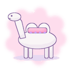
AA very great blessing, the biggest one in the book. A white camel coming toward you means a guest who brings luck, or a wedding, or money from far away. If it kneels in front of you, it chose you.
«Ak töö tüşüñö kirse, kuday özü konok jiberdi.»If a white camel enters your dream, God himself has sent you a guest.
sabi: I have never seen a camel, not even a brown one. Apa saw two, in 1958.
A horse is your life's road and your strength. A saddled horse waiting: a journey that will go well. A running horse: news. A white horse: joy, clean and simple. A horse that won't let you get on: you are rushing something. In Iradi at is also "name", so apa says a horse in a dream can also mean someone will say your name kindly today.
«At — erdin kanaty.»The horse is a man's wings (she says it's a woman's too, now).
A full moon: a wish ripens. A thin new moon: start something small. A moon in the water: someone is thinking of you and can't say it. Never point at the moon in the dream or out of it, apa says, it's rude, she's older than you.
Red apple: love that is ready. Green apple: love that needs a summer. Giving an apple: you will make peace with someone. Eating a sour one: you will laugh about a quarrel later.
ÄÄ is a Fergana letter, for äke and melons. Apa says nobody in our family has ever dreamed in Ä. "Ask the people in Bazar-Korgon, their dreams are sweeter, they have the apricots."
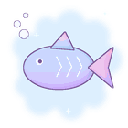
BLive fish in clear water: a baby is coming to someone in the family (apa counts the months and smiles). A big fish in your hands: luck you must hold carefully. Dead fish: a small disappointment, eat something sweet.
«Balyk tüşkö — bala üygö.»A fish in the dream, a child in the house.
sabi: Every time anyone dreams of fish apa phones my aunt in Talas.
A laughing baby: new work, a new start, something that will grow. A crying baby: a worry that only needs attention, not fear. Holding a baby: you will be trusted with something.
A wolf is not bad. A wolf that looks at you and goes: an enemy who has decided to leave you alone. A grey wolf walking with you: a strong friend you don't know yet. Only a wolf at your door means: lock up and stop telling everyone your plans.
C is in the alphabet but no proper Iradi word starts with it (look at uyalar.net/tamga, Bektur explains). Apa: "C is for city dreams. They don't mean anything, they are just traffic."
Tea in a dream is a conversation. Hot tea poured for you: a guest, good talk. Spilled tea: a word said too fast. A full kettle on the stove: the house is fine, stop worrying.
«Çay — sözdün başy.»Tea is the beginning of every talk.
Long hair: long life and long patience. Cutting your hair: you will finish something. Someone braiding your hair: you are loved and you know who.
sabi: I dreamed I cut my hair short and then I did. Apa said that's not a dream, that's a plan.
DA tree with leaves is the family. Blossom: good news from the young ones. Fruit: from the old ones. A tree falling is not a death, apa says firmly: it's a change of house. Climbing a tree: you will get higher at work, carefully.
Nobody in our family has seen the sea. So a sea in a dream means something far and very big that you will one day see. Calm sea: a quiet year. Waves: a busy one, but you will swim.
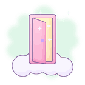
EAn open door: an offer. A closed door: wait, it's not your time yet. A door standing alone in a field with nothing behind it (I have this one often): you are choosing between two lives and both are fine.
«Bir eşik jabylsa, ekinçisi açylat.»When one door shuts, the second one opens.
When your mother comes into a dream, the road opens: help is coming, from her or from someone like her. If she says something, remember it word for word in the morning.
«Ene tüşkö kirse, jol açylat.»When a mother enters a dream, the road opens.
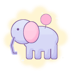
FSomething big is coming and it will be on your side. Apa has never seen an elephant either, not even in the Almaty zoo, but she is very confident about this one.
sabi: In Talas they say fil, in the mountains pil. Apa says fil. In her dreams too.
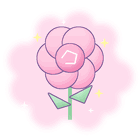
GPicking flowers: you will be praised. Receiving them: someone is shy about you. Dry flowers: a memory comes back, kindly. Roses in winter (dreamcore!!): a surprise you will not believe.
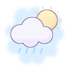
HClear sky: things are clear. Fog: don't sign anything this week. Thunder without rain: loud people, nothing more. Light rain: tears that wash, not tears that hurt.
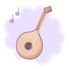
IIf you sing in a dream and your voice is beautiful (it always is in dreams): a celebration. If you hear a song you don't know, remember a line; apa says sometimes the dead sing to us so we don't forget the tune.
sabi: Once I dreamed a whole tüntolk song that doesn't exist. Kamila from uyalar.net/tuntolk said write it down. I lost it by breakfast.
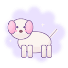
İA friendly dog: a loyal friend. A barking dog: gossip, but from a distance. A dog following you home: someone wants to be closer to you. A small white dog: a child's luck.
Sewing with a needle: you will mend a quarrel. Losing a needle: you will lose a small thing and find a bigger one. Pricking a finger: a little jealousy, nothing serious.
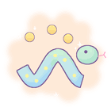
JA snake is wealth, apa says, which surprises everyone. A snake in the house: money is coming into it. A snake biting you: someone envious, but you will heal quickly. Kill the snake in the dream: a problem ends.
«Jylan — baylyktyn küzötçüsü.»The snake is the guard of riches.
Whole eggs: plans that are still safe inside. Broken egg: a plan you will change, not lose. Many eggs in a basket: apa just laughs and says 'grandchildren'.
A straight road: an easy month. A winding mountain road: a hard month with a good view. A road with no end: you are thinking too much. The last toast at every toi is to the road; a road in a dream is never bad.
One bright star: a wish that will come true if you don't tell it. A falling star: hurry, decide. Many stars: you will meet many people this year. Emil from uyalar.net/asman says the star that doesn't move is called Irad; apa says obviously.
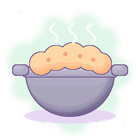
KA full kazan: a full house and plov for everyone. An empty one: you need to invite people. A kazan boiling over: too much, too fast, turn it down.
sabi: Apa's kazan is from 1975. It came from the village before the water. It is the most important object in our flat.
Fresh snow: a clean start. Walking on snow that crunches: good news by the end of winter. Snow in summer: something you thought was finished comes back, nicely.
Seeing a bride in white: joy in the family. Being the bride: a big change you said yes to. Apa puts the white elechek on the bride in her stories. White is always good.
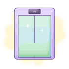
LA Nurzhan entry. A lift going up: things improve. Going down: rest, you are tired. A lift that goes sideways, or past the top floor, or opens onto a field (I have them all): you are between two stages of life. A lift that stops between floors: be patient, the mechanic is coming. In real life he is not coming.
sabi: Apa does not believe in lift dreams. 'In my village there were no lifts.' Then she dreamed of one in 2024 and now it's in the book.
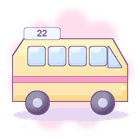
MA marshrutka that stops for you: help will come on time. One that drives past full: the chance comes back, next one. Sitting in the front seat and passing the money: you will be trusted with other people's business. The driver asks where you're going and you don't know: decide, today.
sabi: The kids at school told the story of the last marshrutka that picks people up after midnight. Apa says if you dream of that one, wake up, drink water and go back to sleep on the other side. Tima's comic uyalar.net/m22 has much nicer marshrutkas.
The rainbow is Maryam's belt. For a woman: a baby coming, hers or someone near. For anyone: a promise that will be kept. The kindest thing you can dream, apa says, and she crosses herself.
«Maryamdyn kuru — jakşy kabar.»Maryam's belt is good news.
A cat on your lap: someone sweet but not honest. A cat at the door: a guest who will stay too long. A ginger cat: the same, but funnier. ms_14 at uyalar.net/mysyk has counted every cat in her courtyard and says apa is slandering them.
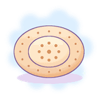
NThe holiest thing in the book after milk. Fresh bread: plenty, a good year. Breaking bread with someone: lasting friendship. Bread with a stamp on it: a blessing. Dropping bread: pick it up, kiss it, put it high; in the dream and outside it.
«Nan bar üydö baarı bar.»In a house with bread there is everything.
sabi: Apa cooked 31 years in a works canteen. She can tell a bakery by the smell from the bus stop.
Nothing starts with Ñ. Apa says: "Like nothing starts with a dream. You just find yourself already in it." I didn't expect that, so it stays.
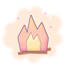
OA fire in the hearth: warm home, a happy household. A big bonfire with people around it: celebration, like Yuhanna Tünü. Jumping over a fire: luck (seven times for luck, three for a wish, nine for love). A house on fire: a passion, not a disaster.
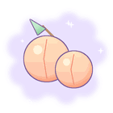
ÖRipe apricots: sweetness after a hard time. Dried apricots: patience pays. An apricot tree in blossom: a love beginning, slowly.
Do not be afraid of this one. To dream of a death, yours or anyone's, means long life for that person, and the end of a worry. Apa says it so firmly that I believe her. Eat bread before you tell anyone.
«Tüştö ölgön — uzak jaşayt.»Who dies in a dream lives long.
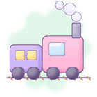
PA train arriving: news from far away. A train leaving without you: you are worried you are late for something; you are not. Riding through mountains at night: a long plan, it will work.
sabi: We have one railway and I have been on it twice. In dreams it goes everywhere.
Finding coins: small worries. Finding notes: unexpected help. Giving money away: it will come back doubled. Counting money: you will be tired from work but paid.
Q is for the highland speakers who say [q] where we say k. Apa says highland dreams are the same as ours, only colder, and with more sheep.
RR is a Russian letter for apa, so this is babushka Valya's entry, from the 3rd floor: "Радуга во сне — к радости, деточка." A rainbow is joy. Apa says: correct, and see Maryamdyn kuru under M. They agree on everything except salt in tea.
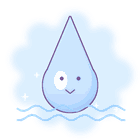
SThe most important letter. Clear running water: a clean life, good health, things will flow. Muddy water: a small trouble that will settle. A big quiet lake with a village under it: apa's. It means she is remembering, and that is allowed.
«Taza suu — taza jol.»Clear water, clear road.
sabi: Apa's village went under the Toktogul water when she was twenty-eight. She dreams of the street with the poplars. She says it is a good dream.
Milk is white and white is holy: health, kindness, a clean heart. Drinking milk: you will recover from something. Spilled milk: apa says nothing, she just wipes the table, so I suppose it means nothing.
You are not ready, you don't know the subject, you forgot your pen. Everybody has this one. It means you are more ready than you feel. Apa never had an exam dream in her life and thinks we are all mad.
sabi: Mine is always accounting, in the Polytech building, in my school uniform.
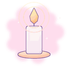
ŞA lit candle: someone is praying for you. A candle that goes out: rest, you have done enough. Lighting a candle for someone: you will help a traveller.
A warm wind: news. A cold wind: a guest who complains. Wind carrying you: a decision made for you; let it, apa says, sometimes the wind knows.
The one everybody asks about. A tooth falling out with blood: news about family, usually far away and usually nothing terrible. Without blood: a far acquaintance, or a worry leaving you. A new tooth growing: a new person in the family. But mostly, apa says, it means you are worried, and also go to the dentist.
«Tiş tüşsö, tişçige bar.»If a tooth falls, go to the dentist.
sabi: Apa's real advice. She is very practical.
Salt is given, never sold, apa says. To dream of salt: someone will give you something and you must not pay for it. Salt spilled: a quarrel, throw a pinch over the left shoulder. A white plain of salt: a big blessing, far away.
Climbing a mountain: hard work that will be worth it. Standing on top: you will be respected. A mountain far away with snow: a dream inside the dream; something you want for years.
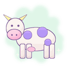
UA brown cow giving milk: plenty. But a cow you see before a horse, apa says, means a grumpy day, in the morning or in a dream; she doesn't believe it, she only says it. A black bull: cross yourself, say nothing about it until noon, and have a quiet day.
sabi: Every grandmother in Irad says the cow thing. None of them believe it. All of them say it.
Flying high and easy: freedom, and you are growing. Flying low over houses: you are watching over someone. Falling: you are tired, go to bed earlier. Flying over the steppe like a bird: apa says it's the soul stretching, it does that when you're young.
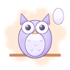
ÜThe owl guards the cradle. An owl feather in a dream: a child is protected, maybe you. An owl looking at you: someone wise wants to say something; listen. Apa hung an owl's feather over my cradle with the cross and the white thread, against the albasty. I still have it.
Your own house, bright: the family is fine. A house with rooms you didn't know were there (dreamcore classic): you have talents you haven't found. A yurt: the old family, the ancestors are pleased with you.
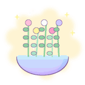
VThe herbs of Yuhanna's night: thyme, mint, St John's wort, wild rose, juniper. Gathering them in a dream: healing is coming. Washing your face in herb water: a new start, a clean one.
sabi: We gather vaysh on the Chu embankment on 23 June. Apa leaves the bowl on the balcony under the stars. Babushka Valya makes a wreath.
Receiving a letter: news. Writing one: you have something to say, say it awake. A letter you can't read: a secret that isn't yours. An old letter from someone gone: they are fine, apa says, and they want you to eat more.
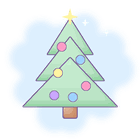
YA Nurzhan entry again, apa says this word is Russian and so is the custom, but we all have one. A tree with lights: a happy winter. Toys falling off: small broken plans, buy new ones. A tree in summer: a celebration out of season, which is the best kind.
ZGold jewellery given to you: an engagement, yours or close. Finding gold: a skill you will be paid for. Losing a gold earring: you will find a better friend than the one you lost. Apa's earrings from her mother are the only gold in our family and she wears them to every toi.